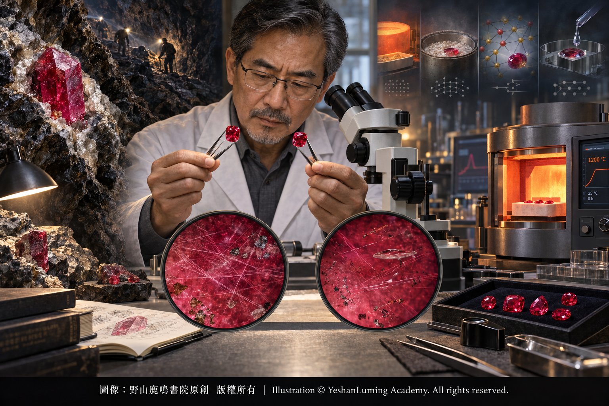

有燒與無燒 · 紅寶石的美容秘密與素顏傳奇Heated and Unheated · The Ruby’s Beauty Secrets and the Legend of Its Natural Face
The World of Gemstones · Ruby SeriesHeated and Unheated · The Ruby’s Beauty Secrets and the Legend of Its Natural Face
The World of Gemstones · Ruby Series有燒與無燒 · 紅寶石的美容秘密與素顏傳奇
寶石世界·紅寶石篇
寶石世界·紅寶石篇（103）The World of Gemstones · Ruby Series (103)
如果你曾在高級珠寶展或拍賣行的鑑定報告上流連，一定會注意到一句足以影響紅寶石身價的重要評語：「沒有發現加熱跡象」（No indications of heating），也就是市場通常所說的「無燒」（Unheated）。
在彩色寶石交易中，兩顆顏色、淨度與重量看起來十分接近的紅寶石，可能因為一顆未發現加熱跡象，另一顆經過熱處理，而形成顯著、甚至極大的價格差距。特別是在收藏級、價格極高的紅寶石中，是否發現加熱跡象，是影響價格高低的一個非常重要的因素。
不過，這種價格差距並沒有固定比例，應該根據每一顆紅寶石的具體情況而定。紅寶石的價值取決於顏色、透明度、淨度、重量、切工、產地、處理方式、鑑定報告及市場需求等多項因素。「無燒」是一項重要的稀有性條件，但不是決定價格的唯一標準。
這不禁讓人好奇：這個神祕的「燒」字，究竟對紅寶石做了什麼？它是一種可以接受的常規處理，還是一場高明的作假騙局？
要理解這個問題，我們首先要為「燒」正名。
「燒」是珠寶市場上的通俗說法，在專業寶石學中稱為「熱處理」（Heat Treatment）。人類將紅寶石置於經過控制的高溫環境中，使其顏色、透明度或內部包裹體狀態發生改變，從而改善寶石的外觀。這是一種歷史悠久、被市場普遍接受的紅寶石處理方法。
熱處理並不是現代才出現的技術。人類利用火焰改善紅寶石以及其他顏色剛玉品質的歷史十分悠久；只是現代加熱設備能夠更加精確地控制溫度、時間、氣氛和冷卻速度，使處理結果更加穩定。
大自然在創造紅寶石時，並不總能帶來適合珠寶使用的完美晶體。許多紅寶石在出土時，可能帶有偏紫、偏棕或過深的色調；有些晶體內部還含有大量細小的金紅石針狀包裹體，使寶石看起來朦朧不清，如同蒙上了一層薄紗。
在適當的加熱條件下，部分細小的金紅石針和其他包裹體可能發生溶解、重新結晶或形態改變；紅寶石內部與顏色有關的化學狀態及光學吸收特徵也可能隨之變化，使其透明度、色調或明度得到改善。
如果你曾在高級珠寶展或拍賣行的鑑定報告上流連，一定會注意到一句足以影響紅寶石身價的重要評語：「沒有發現加熱跡象」（No indications of heating），也就是市場通常所說的「無燒」（Unheated）。
在彩色寶石交易中，兩顆顏色、淨度與重量看起來十分接近的紅寶石，可能因為一顆未發現加熱跡象，另一顆經過熱處理，而形成顯著、甚至極大的價格差距。特別是在收藏級、價格極高的紅寶石中，是否發現加熱跡象，是影響價格高低的一個非常重要的因素。
不過，這種價格差距並沒有固定比例，應該根據每一顆紅寶石的具體情況而定。紅寶石的價值取決於顏色、透明度、淨度、重量、切工、產地、處理方式、鑑定報告及市場需求等多項因素。「無燒」是一項重要的稀有性條件，但不是決定價格的唯一標準。
這不禁讓人好奇：這個神祕的「燒」字，究竟對紅寶石做了什麼？它是一種可以接受的常規處理，還是一場高明的作假騙局？
要理解這個問題，我們首先要為「燒」正名。
「燒」是珠寶市場上的通俗說法，在專業寶石學中稱為「熱處理」（Heat Treatment）。人類將紅寶石置於經過控制的高溫環境中，使其顏色、透明度或內部包裹體狀態發生改變，從而改善寶石的外觀。這是一種歷史悠久、被市場普遍接受的紅寶石處理方法。
熱處理並不是現代才出現的技術。人類利用火焰改善紅寶石以及其他顏色剛玉品質的歷史十分悠久；只是現代加熱設備能夠更加精確地控制溫度、時間、氣氛和冷卻速度，使處理結果更加穩定。
大自然在創造紅寶石時，並不總能帶來適合珠寶使用的完美晶體。許多紅寶石在出土時，可能帶有偏紫、偏棕或過深的色調；有些晶體內部還含有大量細小的金紅石針狀包裹體，使寶石看起來朦朧不清，如同蒙上了一層薄紗。
在適當的加熱條件下，部分細小的金紅石針和其他包裹體可能發生溶解、重新結晶或形態改變；紅寶石內部與顏色有關的化學狀態及光學吸收特徵也可能隨之變化，使其透明度、色調或明度得到改善。
但是，加熱並不一定能把所有暗紅色都變成鮮紅色。每顆紅寶石的化學成分和內部結構都不相同，加熱可能減弱紫色或棕色調，也可能使顏色加深、變淺或更加均勻。處理是否成功，取決於紅寶石原料本身和加熱工藝。
在正常佩戴與保存條件下，傳統加熱所造成的顏色改善通常具有良好的穩定性。因此，經過準確鑑定和充分披露的加熱紅寶石，可以在珠寶市場上合法而正常地交易。
熱處理本身就是一種寶石處理（Treatment）。它之所以能被市場普遍接受，不是因為它「不算處理」，而是因為這種方法歷史悠久、效果通常穩定，而且只要得到充分披露，消費者便可以根據其品質和價格作出選擇。
真正構成欺騙的，不是紅寶石曾經接受處理，而是出售者沒有如實披露處理情況，甚至把經過重度處理的低價紅寶石冒充天然無燒紅寶石出售。
在東方珠寶市場中，人們經常使用「老燒」與「新燒」來區分紅寶石的不同處理方式。這兩個詞通俗易懂，卻不是國際寶石實驗室共同採用的標準分類，不同地區和商家對它們的理解也可能存在差異。
一般來說，「老燒」常被用來指傳統加熱處理；「新燒」則是市場上含義不甚統一的通俗用語，有時被用來形容加熱並伴隨助熔劑作用的紅寶石，也可能被商家籠統地用來指擴散、玻璃充填或其他現代處理。
然而，這些方法的原理、穩定性與市場價值完全不同。擴散和玻璃充填也不能簡單視為普通加熱，因而不能只用「新燒」兩個字混為一談。
最基本的傳統熱處理，主要依靠高溫改變紅寶石的顏色、透明度和包裹體狀態，不以染色或玻璃充填為目的。這類處理通常就是市場所說的「老燒」或「有燒紅寶石」。
另一類紅寶石在加熱時會使用硼砂等助熔劑。助熔劑可以進入寶石表面的裂隙，促進裂隙局部癒合，並可能留下不同程度的殘留物。這類紅寶石仍然是天然剛玉，但是外來物質參與了裂隙癒合。殘留物的種類、數量和分布程度，不僅會影響實驗室對處理方式的描述，也會影響市場價值。
與傳統加熱原理不同的，是晶格擴散處理（Lattice Diffusion）。擴散處理是在極高溫條件下，使人工加入的致色元素從寶石表面進入晶格，從而形成或加強顏色。鈹擴散（Beryllium Diffusion）是剛玉擴散處理中具有代表性的一種方法。
擴散處理可以產生十分美麗而且相對穩定的顏色，但是由於外來元素參與了致色過程，其稀有性與市場價值通常明顯低於外觀相近的天然無燒或傳統加熱紅寶石，因此必須清楚披露。
另一種性質完全不同的處理，是裂隙玻璃充填，其中最著名的是鉛玻璃充填（Lead-Glass Filling）。有些低品質紅寶石原料裂隙密布、透明度很低，本來難以直接作為珠寶材料使用。處理者利用玻璃填入裂隙，減少裂隙對光線的散射，從而顯著改善寶石的透明度和表面完整感。
玻璃充填並沒有真正消除裂隙，而是用外來玻璃掩蓋裂隙對外觀的影響。這種材料雖然仍含有天然剛玉，但是其外觀在很大程度上依賴玻璃填料。玻璃充填紅寶石的耐久性明顯低於普通天然紅寶石。某些化學品、不當清洗、珠寶維修、高溫或重新拋光，都可能損害玻璃填料。因此，在為這類紅寶石改圈、焊接、清潔或維修以前，必須事先向珠寶技師披露其處理情況。
這類紅寶石並非完全沒有裝飾用途，但是其市場價值通常遠低於天然無燒或傳統加熱紅寶石，更不應按照收藏級天然紅寶石的標準定價。

Click to enlarge
既然傳統加熱能夠帶來美麗而且相對穩定的結果，為什麼「無燒」紅寶石仍然享有如此崇高的市場地位？
答案仍然是兩個字：稀有。
當一份權威寶石實驗室報告指出一顆紅寶石「沒有發現加熱跡象」時，表示在現有儀器、樣品狀態與檢測條件下，實驗室沒有觀察到足以證明其接受過熱處理的證據。
但是，「無燒」並不等於完美，也不等於「鴿血紅」。
一顆無燒紅寶石可能顏色偏暗、偏紫或偏棕，也可能含有大量裂隙與包裹體；相反，一顆經過傳統加熱的紅寶石，也可能擁有非常優美的顏色、良好的透明度與出色的切工。
真正令收藏家夢寐以求的，是那些在沒有發現加熱跡象的前提下，仍然兼具鮮豔顏色、良好透明度、理想淨度、優秀切工、較大重量及稀有產地的天然紅寶石。大顆粒、高品質而又未經加熱的天然紅寶石極其稀少。對頂級收藏家而言，購買這類紅寶石，買下的不只是它的美學價值，更是一場難以複製的地質奇蹟。
作為寶石鑑定師，如何判斷紅寶石是否曾經被高溫「化過妝」？
紅寶石經過加熱後，內部可能留下金紅石針部分溶解、礦物包裹體熔蝕、包裹晶體邊緣圓化、裂隙癒合或應力裂隙等跡象。例如，原本細長而完整的金紅石針可能發生部分溶解，留下點狀、短線狀或斷續的殘餘物。某些包裹體受熱膨脹後，還可能在周圍形成近似圓盤狀的應力裂隙，宛如顯微鏡下的一艘艘微型飛碟。
然而，並不是所有加熱紅寶石都會出現完全相同的特徵。加熱溫度、時間、爐內氣氛、冷卻方式以及紅寶石原有成分不同，留下的痕跡也不相同。某些程度較輕的加熱，很難單靠普通顯微鏡確認。
同樣，未經加熱的紅寶石也不一定都具有完整而清晰的金紅石針。有些無燒紅寶石本來就不含明顯絲絹；有些包裹體也可能在天然地質作用中發生破裂或局部溶蝕。因此，看見完整金紅石針，可以成為紅寶石未經高溫加熱的重要線索，卻不能僅憑一組金紅石針便作出最後結論。
面對高價值紅寶石，設備完善的寶石實驗室通常會綜合運用顯微鏡、傅立葉變換紅外光譜儀、拉曼光譜儀、紫外—可見—近紅外光譜儀及微量元素分析設備，尋找彼此可以相互印證的證據。
在國際寶石實驗室的報告中，未發現加熱證據的紅寶石，通常會使用相當於“No indications of heating”的表述；發現加熱證據時，則可能使用相當於“Indications of heating”的說明。
不同實驗室對助熔劑殘留、裂隙癒合、擴散處理和玻璃充填所使用的術語、縮寫或代碼並不完全相同。因此，閱讀寶石報告時，不能只記住某一個字母或代碼，而應查看報告上的完整註釋、圖例和該實驗室的官方定義。
必須再次強調，鑑定報告中的「沒有發現加熱跡象」，只是一項關於是否發現熱處理證據的專業結論，而不是對紅寶石顏色、淨度、產地或整體品質的全面保證。
一顆紅寶石是否值得購買，不能只看「有燒」或「無燒」。首先要看它本身是否美麗，其次才是重量、淨度、切工、產地、處理方式、鑑定報告與價格是否彼此相稱。
傳統加熱使許多原本色調不佳或透明度不足的紅寶石展現出更加美麗的一面，也讓更多人有機會親近紅寶石的鮮豔；而那些不需要人類高溫修飾，便天然擁有頂級品質的紅寶石，則因其難以複製的稀有性，成為收藏市場長久追尋的對象。
處理並不等於欺騙，無燒也不等於完美。真正重要的，是準確鑑定、充分披露與合理定價：讓天然無燒的歸於天然無燒，讓傳統加熱的歸於傳統加熱，讓擴散與玻璃充填的紅寶石，也以真實身份面對市場。
簡單地說，紅寶石的市場價值通常可以形成這樣一個基本概念：
**頂級無燒紅寶石**，因天然品質優異而且極其稀有，通常具有最高的收藏價值。
**傳統加熱紅寶石**，如果顏色、透明度、重量和切工優秀，仍然可以是美麗而珍貴的高級寶石，只是價值一般低於品質相近的無燒紅寶石。
**加熱並伴隨明顯助熔劑殘留的紅寶石**，價值通常會根據裂隙癒合及殘留物的程度進一步降低。
**擴散處理紅寶石**的顏色有人為加入元素的參與，稀有性與市場價值通常明顯低於傳統加熱紅寶石。
**玻璃充填紅寶石**的外觀和耐久性在較大程度上依賴填充材料，其市場價值通常遠低於天然無燒、傳統加熱及一般擴散處理紅寶石，購買、佩戴和維修時尤其需要謹慎。
這種高低次序只是一項基本原則，不能代替對每一顆紅寶石的具體評估。一顆顏色鮮豔、透明度良好的傳統加熱紅寶石，完全可能比一顆顏色暗淡、裂隙很多的無燒紅寶石更加美麗，也更加適合佩戴。
對來源不明、處理情況存疑或價值較高的紅寶石，最穩妥的做法，仍然是送交設備完善、經驗豐富的獨立寶石實驗室檢測。
在紅寶石的世界裡，大自然與人類共同使用火焰：地球深處的熱力創造晶體，人類控制的爐火改善外觀。二者之間的界線，正是現代寶石鑑定需要揭示的真相。
（未完待續）
If you have ever lingered over gemological reports at a prestigious jewelry exhibition or auction house, you will almost certainly have noticed one important statement capable of profoundly affecting a ruby’s value: “No indications of heating,” commonly described in the marketplace as “unheated.”
In the colored gemstone trade, two rubies that appear very similar in color, clarity, and weight may differ significantly—and sometimes enormously—in price simply because no indications of heating have been found in one, while the other has undergone heat treatment. Particularly among exceptionally valuable, collector-grade rubies, whether indications of heating have been detected is a critically important factor affecting price.
Nevertheless, there is no fixed ratio governing this price difference; each ruby must be evaluated according to its individual characteristics. A ruby’s value depends on numerous factors, including color, transparency, clarity, weight, cut, geographic origin, treatment, gemological report, and market demand. Being unheated is an important condition of rarity, but it is not the only standard that determines price.
This naturally raises a question: What exactly does this mysterious “heating” do to a ruby? Is it an acceptable and conventional treatment, or a sophisticated form of deception?
To understand the issue, we must first explain what “heating” really means.
“Heating” is the common term used in the jewelry trade; in professional gemology, it is known as “heat treatment.” A ruby is placed in a carefully controlled high-temperature environment to alter its color, transparency, or the condition of its internal inclusions, thereby improving its appearance. It is a time-honored method of ruby treatment that is widely accepted by the market.
Heat treatment is by no means a modern invention. Human beings have used fire to improve the quality of rubies and other colored varieties of corundum for a very long time. Modern heating equipment, however, permits much more precise control over temperature, duration, atmosphere, and cooling rate, making the results more consistent.
When nature creates rubies, it does not always produce perfect crystals suitable for jewelry. Many rubies emerge from the earth with purplish, brownish, or excessively dark tones. Some also contain large quantities of fine rutile needles, which can make the stone appear hazy and indistinct, as though it were covered by a delicate veil.
Under appropriate heating conditions, some fine rutile needles and other inclusions may dissolve, recrystallize, or change in form. Chemical states related to color and optical absorption characteristics within the ruby may also change, improving its transparency, hue, or lightness.
If you have ever lingered over gemological reports at a prestigious jewelry exhibition or auction house, you will almost certainly have noticed one important statement capable of profoundly affecting a ruby’s value: “No indications of heating,” commonly described in the marketplace as “unheated.”
In the colored gemstone trade, two rubies that appear very similar in color, clarity, and weight may differ significantly—and sometimes enormously—in price simply because no indications of heating have been found in one, while the other has undergone heat treatment. Particularly among exceptionally valuable, collector-grade rubies, whether indications of heating have been detected is a critically important factor affecting price.
Nevertheless, there is no fixed ratio governing this price difference; each ruby must be evaluated according to its individual characteristics. A ruby’s value depends on numerous factors, including color, transparency, clarity, weight, cut, geographic origin, treatment, gemological report, and market demand. Being unheated is an important condition of rarity, but it is not the only standard that determines price.
This naturally raises a question: What exactly does this mysterious “heating” do to a ruby? Is it an acceptable and conventional treatment, or a sophisticated form of deception?
To understand the issue, we must first explain what “heating” really means.
“Heating” is the common term used in the jewelry trade; in professional gemology, it is known as “heat treatment.” A ruby is placed in a carefully controlled high-temperature environment to alter its color, transparency, or the condition of its internal inclusions, thereby improving its appearance. It is a time-honored method of ruby treatment that is widely accepted by the market.
Heat treatment is by no means a modern invention. Human beings have used fire to improve the quality of rubies and other colored varieties of corundum for a very long time. Modern heating equipment, however, permits much more precise control over temperature, duration, atmosphere, and cooling rate, making the results more consistent.
When nature creates rubies, it does not always produce perfect crystals suitable for jewelry. Many rubies emerge from the earth with purplish, brownish, or excessively dark tones. Some also contain large quantities of fine rutile needles, which can make the stone appear hazy and indistinct, as though it were covered by a delicate veil.
Under appropriate heating conditions, some fine rutile needles and other inclusions may dissolve, recrystallize, or change in form. Chemical states related to color and optical absorption characteristics within the ruby may also change, improving its transparency, hue, or lightness.
Heating, however, cannot necessarily transform every dark red ruby into a vivid red one. Every ruby has a different chemical composition and internal structure. Heating may reduce purple or brown tones, but it may also deepen, lighten, or even out the color. Whether the treatment succeeds depends on both the original ruby material and the heating process employed.
Under normal conditions of wear and storage, improvements produced by traditional heat treatment are generally stable. Therefore, heated rubies that have been accurately identified and fully disclosed may be traded legally and legitimately in the jewelry market.
Heat treatment is itself a form of gemstone treatment. It is widely accepted by the market not because it somehow “does not count” as treatment, but because it has a long history and generally produces stable results. As long as the treatment is fully disclosed, consumers can make their choices according to the ruby’s quality and price.
What constitutes deception is not the fact that a ruby has been treated, but the seller’s failure to disclose the treatment truthfully—or even the sale of a heavily treated, low-value ruby as a natural unheated stone.
In Eastern jewelry markets, the expressions “old heating” and “new heating” are frequently used to distinguish among different forms of ruby treatment. Although these terms are easy to understand, they are not standardized classifications shared by international gemological laboratories, and their meanings may vary among regions and dealers.
Generally speaking, “old heating” commonly refers to traditional heat treatment. “New heating,” however, is an imprecise commercial expression. It is sometimes used to describe rubies heated with the involvement of flux, but dealers may also use it broadly to refer to diffusion, glass filling, or other modern treatments.
Yet these processes differ completely in principle, stability, and market value. Diffusion and glass filling cannot simply be regarded as ordinary heating; therefore, all these treatments must not be lumped together under the single expression “new heating.”
The most basic form of traditional heat treatment relies principally on high temperatures to alter a ruby’s color, transparency, and inclusions; it is not intended to dye the stone or fill it with glass. This is the kind of treatment generally described in the market as “old heating” or simply as a “heated ruby.”
Another type of treatment involves the use of borax or other fluxes during heating. Flux may enter surface-reaching fissures, promote their partial healing, and leave varying amounts of residue. Such a ruby remains natural corundum, but foreign material has participated in the fissure-healing process. The type, quantity, and distribution of the residues affect not only how a laboratory describes the treatment, but also the ruby’s market value.
Lattice diffusion treatment operates on a different principle from traditional heating. Under conditions of extremely high temperature, artificially introduced coloring elements diffuse from the surface into the crystal lattice, thereby producing or intensifying color. Beryllium diffusion is a representative example of diffusion treatment in corundum.
Diffusion treatment can produce extremely beautiful and relatively stable colors. However, because artificially introduced elements have participated in the coloring process, the rarity and market value of diffusion-treated rubies are usually significantly lower than those of visually similar natural unheated or traditionally heated rubies. The treatment must therefore be clearly disclosed.
A treatment of an entirely different nature is fissure filling with glass, of which lead-glass filling is the best-known example. Some low-quality ruby material is so heavily fissured and has such poor transparency that it would ordinarily be difficult to use in jewelry. Treaters introduce glass into the fissures to reduce the scattering of light, thereby significantly improving the stone’s apparent transparency and surface integrity.
Glass filling does not truly eliminate the fissures; instead, foreign glass conceals their effect on the ruby’s appearance. Although such material still contains natural corundum, its appearance depends substantially on the presence of the glass filler. Glass-filled rubies are considerably less durable than ordinary natural rubies. Certain chemicals, improper cleaning, jewelry repair, high temperatures, or repolishing may damage the filler. Therefore, before such a ruby is resized, soldered, cleaned, or repaired, its treatment must be disclosed to the jeweler or repair technician.
These rubies are not entirely without decorative use, but their market value is usually far lower than that of natural unheated or traditionally heated rubies. They certainly should not be priced according to the standards applied to collector-grade natural rubies.
Click to enlarge
Since traditional heating can produce beautiful and relatively stable results, why do unheated rubies continue to enjoy such an exalted position in the marketplace?
The answer can still be expressed in two words: exceptional rarity.
When a report from an authoritative gemological laboratory states that a ruby shows “no indications of heating,” it means that, with the instruments available and under the existing conditions of the sample and the examination, the laboratory has not observed sufficient evidence to establish that the ruby underwent heat treatment.
But “unheated” does not mean perfect, nor does it mean “pigeon’s blood red.”
An unheated ruby may be dark, purplish, or brownish, and it may contain numerous fissures and inclusions. Conversely, a traditionally heated ruby may possess exceptionally beautiful color, excellent transparency, and superb cutting.
What collectors truly dream of are natural rubies that show no indications of heating yet still possess vivid color, good transparency, desirable clarity, excellent cutting, substantial weight, and a rare geographic origin. Large, high-quality natural rubies that have not been heated are extraordinarily scarce. For the foremost collectors, acquiring such a ruby means purchasing not merely an object of beauty, but a geological miracle that can never be reproduced.
As gemologists, how do we determine whether a ruby has ever been “made up” by high temperatures?
After heating, a ruby may display evidence such as partially dissolved rutile needles, corroded mineral inclusions, rounded edges on included crystals, healed fissures, or stress fractures. For example, originally long and intact rutile needles may partially dissolve, leaving dotted, shortened, or discontinuous remnants. When some inclusions expand under heat, they may also produce approximately disc-shaped stress fractures around them, resembling tiny flying saucers beneath the microscope.
However, not every heated ruby displays exactly the same features. Differences in heating temperature, duration, furnace atmosphere, cooling method, and the ruby’s original composition can leave very different traces. Some forms of mild heating may be extremely difficult to confirm with an ordinary microscope alone.
Likewise, an unheated ruby does not necessarily contain complete and clearly visible rutile needles. Some unheated rubies naturally contain no obvious silk, while certain inclusions may have fractured or partially dissolved during natural geological processes. Therefore, intact rutile needles may provide important evidence that a ruby has not undergone high-temperature heating, but a final conclusion cannot be reached solely on the basis of one group of rutile needles.
When examining a high-value ruby, a well-equipped gemological laboratory will usually combine microscopy, Fourier-transform infrared spectroscopy, Raman spectroscopy, ultraviolet–visible–near-infrared spectroscopy, and trace-element analysis, seeking multiple forms of evidence that corroborate one another.
In reports issued by international gemological laboratories, a ruby for which no evidence of heating has been detected is usually described with wording equivalent to “No indications of heating.” When evidence of heating has been detected, wording equivalent to “Indications of heating” may be used.
The terminology, abbreviations, and codes used by different laboratories for flux residues, fissure healing, diffusion treatment, and glass filling are not entirely uniform. Therefore, when reading a gemological report, one should not rely solely on memorizing a particular letter or code, but should examine the complete comments, legend, and official definitions provided by the issuing laboratory.
It must be emphasized once again that the statement “No indications of heating” on a gemological report is only a professional conclusion concerning whether evidence of heat treatment has been detected. It is not a comprehensive guarantee of the ruby’s color, clarity, geographic origin, or overall quality.
Whether a ruby is worth purchasing cannot be determined solely by whether it is heated or unheated. The first consideration should be whether the stone itself is beautiful. Only then should one consider whether its weight, clarity, cut, geographic origin, treatment, gemological report, and price are all reasonably consistent with one another.
Traditional heat treatment allows many rubies with less desirable hues or insufficient transparency to reveal a more beautiful side, giving more people the opportunity to enjoy the vivid splendor of ruby. Those rubies that naturally possess exceptional quality without requiring refinement by human-controlled heat, however, have become enduring objects of pursuit in the collecting market because of their irreproducible rarity.
Treatment does not necessarily mean deception, and unheated does not necessarily mean perfect. What truly matters is accurate identification, full disclosure, and reasonable pricing: let natural unheated rubies be recognized as natural unheated rubies; let traditionally heated rubies be recognized as traditionally heated rubies; and let diffusion-treated and glass-filled rubies also enter the marketplace under their true identities.
Simply stated, the market values of rubies generally follow this basic pattern:
**Top-quality unheated rubies**, because of their exceptional natural quality and extreme rarity, generally possess the highest collector value.
**Traditionally heated rubies**, when they have excellent color, transparency, weight, and cutting, may still be beautiful and precious high-grade gemstones, although their value is generally lower than that of unheated rubies of comparable quality.
**Rubies that have been heated with significant flux residues** generally decline further in value according to the extent of fissure healing and the amount of residue present.
**Diffusion-treated rubies** derive their color in part from artificially introduced elements, and their rarity and market value are generally significantly lower than those of traditionally heated rubies.
**Glass-filled rubies** depend substantially on filling material for both their appearance and durability. Their market value is usually far lower than that of natural unheated, traditionally heated, and ordinary diffusion-treated rubies, and particular caution is required when purchasing, wearing, or repairing them.
This hierarchy is only a general principle and cannot replace the individual evaluation of each ruby. A traditionally heated ruby with vivid color and good transparency may certainly be more beautiful—and more suitable for wearing—than an unheated ruby with dark color and numerous fissures.
For a ruby of unknown origin, uncertain treatment history, or substantial value, the safest course is still to submit it to an experienced, well-equipped, independent gemological laboratory for examination.
In the world of rubies, nature and humankind both employ fire: the heat deep within the earth creates the crystal, while the controlled fire of human furnaces improves its appearance. The boundary between the two is precisely the truth that modern gemological examination must reveal.
(To be continued)